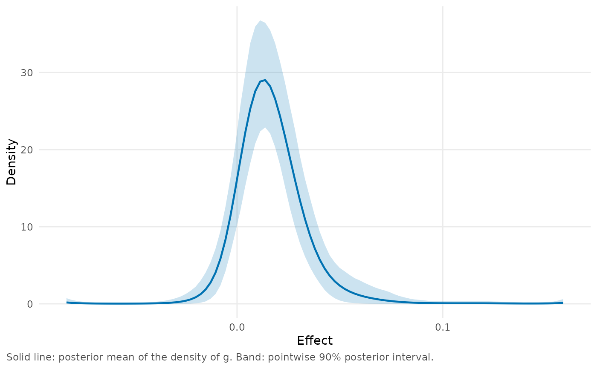

Fit the Bayesian Efron log-spline model to estimates and standard errors
Source:R/fit.R
bayes_efron_fit.RdA meta-analysis or a multisite trial gives an estimate
\(\hat\theta_i\) and a standard error
\(\sigma_i\) for each of \(K\) sites. bayes_efron_fit()
treats the true effects \(\theta_i\) as draws from an
unknown distribution \(g\) and estimates \(g\) and each
\(\theta_i\) together. Unlike the usual random-effects model,
it does not assume that \(g\) is normal: \(g\) can be skewed or have
more than one peak, and the amount of shrinkage for each estimate
depends on that shape.
The result contains posterior draws of \(g\). Functions such as
site_summary(), g_summary() and plot() compute posterior means,
intervals and probabilities for the sites and for \(g\) from these
draws.
The model is fitted by Markov chain Monte Carlo with CmdStan, so the
cmdstanr package and CmdStan must be installed. The first call compiles
the Stan program, which can take up to a minute. Later calls reuse the
compiled model (see bayes_efron_compile()).
Usage
bayes_efron_fit(
theta_hat,
sigma = NULL,
...,
grid = NULL,
grid_method = "pilot",
support = NULL,
L = NULL,
expansion = 0.5,
margin = 0.1,
M = 6L,
knots = "grid",
component = c("point", "normal"),
width = 2/3,
theta_true = NULL,
bound_expansion = NULL,
settings = NULL,
model_family = "RE",
chains = 4L,
parallel_chains = chains,
iter_warmup = 1000L,
iter_sampling = 3000L,
adapt_delta = 0.9,
max_treedepth = 10L,
seed = NULL,
keep_cmdstan_fit = FALSE,
store_grid_quantities = FALSE,
site_draws = FALSE,
thin = 1L,
refresh = NULL,
init = 0.5,
show_messages = NULL
)Arguments
- theta_hat
Numeric vector of effect estimates, one per site, all on the same scale (e.g., standardized mean differences or log odds ratios). Names, if present, are used as site labels. Can also be a data frame or a
bef_dataobject that contains the estimates and their standard errors (seeas_bef_data()), in which casesigmais omitted. At least 5 sites are required.- sigma
Numeric vector of standard errors of the estimates, the same length as
theta_hat. All must be positive.- ...
These dots are for future extensions and must be empty.
- grid
A
bef_gridobject created bymake_efron_grid(). IfNULL(the default), the grid is built from the arguments that follow. If a grid is supplied,grid_method,support,L,expansion,margin,M,knots,component,width,theta_trueandbound_expansionmust not be specified.- grid_method
Method for choosing the limits of the grid:
"pilot"(the default),"paper_realdata","paper_simulation"or"paper_sensitivity". See the Details ofmake_efron_grid(). With"pilot", the pilot fit uses this call'sseedandparallel_chains, so the grid is the same as the one returned bymake_efron_grid()with that seed.- support
Numeric vector of length 2 with the lower and upper limits of the grid. If
NULL(the default), the limits are chosen bygrid_method.- L
Number of grid points, an integer from 51 to 401. If
NULL(the default), the number is chosen from the data: 101, or more if 101 points are too few for the standard errors or for the spread of the effects. See the Details ofmake_efron_grid().- expansion
Expansion factor, a number between 0 and 5. With
grid_method = "pilot"or"paper_realdata", the range oftheta_hatis extended on each side byexpansiontimes its width.- margin
Margin for
grid_method = "pilot", a number between 0 and 1. The interval that contains the central 99.9% of the pilot estimate of \(g\) is extended on each side bymargintimes its width.- M
Number of spline functions, an integer from 3 to 10. More spline functions allow \(g\) to have narrower features. In simulated data sets of 1,500 sites, the site intervals contained somewhat fewer of the true effects with 8 functions than with 6 (see
vignette("twin-towers")).- knots
Method for placing the knots of the spline functions. Currently only
"grid"is available; see the Details ofmake_efron_grid().- component
Type of component at each grid point:
"point"(the default) for a point mass, or"normal"for a normal distribution.- width
Standard deviation of the normal components in units of the grid spacing, a number greater than 0 and at most 2. Only used with
component = "normal".- theta_true
Numeric vector of true effects, the same length as
theta_hat. Required by"paper_simulation"and"paper_sensitivity", which are intended for simulations.- bound_expansion
Expansion factor for
grid_method = "paper_sensitivity", a number greater than 0 and at most 5: the range oftheta_trueis extended on each side bybound_expansiontimes its width.NULL(the default) is equivalent to 0.5.- settings
Set to
"0.3.0"to fit the model as version 0.3.0 of the package did. The fit then uses that version's Stan program and its defaults forgrid_method("paper_realdata"),L(101) andsite_draws(TRUE); arguments that you set yourself are kept. WithNULL(the default), the same seed gives different draws than it did in version 0.3.0, and a message about the changed defaults is shown once per session. Seevignette("implementation")for when the draws of version 0.3.0 are reproduced exactly.- model_family
Model family. Currently only
"RE", the model described in Details, is available.- chains
Number of Markov chains, an integer from 1 to 16.
- parallel_chains
Number of chains to run in parallel, an integer from 1 to
chains. By default all chains run in parallel.- iter_warmup
Number of warmup iterations per chain.
- iter_sampling
Number of sampling (post-warmup) iterations per chain, at least 1.
- adapt_delta
Target acceptance rate of the sampler, a number between 0 and 1. A higher value leads to a smaller step size, which can remove divergent transitions but makes sampling slower. With about 20 sites, divergent transitions are common with the default of 0.9, and 0.99 is a better starting value (see
vignette("teacher-expectancy")).- max_treedepth
Maximum tree depth of the sampler, an integer from 1 to 20. Increase it if
diagnose()reports many iterations that reached the maximum.- seed
Integer seed for the sampler. If
NULL(the default), a seed is taken from the clock. In either case the seed that was used is stored in the result.- keep_cmdstan_fit
If
TRUE, thecmdstanr::CmdStanMCMCobject is stored in the result ascmdstan_fit. It refers to temporary files, so it is only useful in the session that created it.- store_grid_quantities
If
TRUE, the draws also include the grid probabilitiesgand their unnormalized logarithmslog_w, which adds2 * Lvariables. This is not needed for the methods, which compute both from the other draws.- site_draws
If
TRUE, the fit also stores five variables per site (theta_mean,theta_sd,theta_map,theta_repandlog_lik), whichconfint(method = "draws")requires. IfFALSE(the default, except withsettings = "0.3.0"), only the draws of the parameters and of \(g\) are stored, and all site summaries are computed from them when they are requested. Both choices give the same draws of \(g\) for the same seed.- thin
Thinning interval, an integer from 1 to
iter_sampling. From each chain, one iteration out of everythinis stored, starting with the first. Thinning reduces the size of the result. It does not affect the sampler diagnostics reported bydiagnose()(e.g., R-hat and the effective sample sizes), which are computed from all iterations. The summaries and the grid diagnostics are computed from the stored draws.- refresh
Number of iterations between progress updates from CmdStan;
0turns them off. IfNULL(the default), 200 is used in an interactive session and 0 otherwise.- init
Initial values for the chains. A number
x(default 0.5) draws the initial values uniformly between-xandxon the unconstrained scale, i.e., for the spline coefficients and for the logarithm of the precision. The default is narrower than CmdStan's default of 2. Can also be a list with one list of values ofalphaandlambdaper chain, or a function that returns such a list of values.- show_messages
If
TRUE, the output of CmdStan and the messages of cmdstanr about the sampler are shown. IfNULL(the default), they are shown in an interactive session only. The package's own warnings anddiagnose()do not depend on this argument.
Value
An object of class c("bef_fit_re", "bef_fit"), which is a list
with the following components.
drawsThe posterior draws, a
posterior::draws_array.posteriorA list with the draws of the mean, the variance and the standard deviation of \(g\), of
effective_paramsand oflog_marginal_likelihood.metadataA list with the data, the settings and summaries of the draws.
cmdstan_fitThe
cmdstanr::CmdStanMCMCobject, only withkeep_cmdstan_fit = TRUE.
See bef_fit for the details of these components and for the available methods.
Details
The model for sites \(i = 1, \ldots, K\) is
$$\hat\theta_i \mid \theta_i \sim N(\theta_i, \sigma_i^2),
\qquad \theta_i \sim g.$$
The standard errors \(\sigma_i\) are treated as known and
may differ between sites. The distribution \(g\) has probabilities
\(g_1, \ldots, g_L\) on a grid of points
\(\tau_1 < \cdots < \tau_L\), with
$$\log g_j = B_j^\top \alpha
- \log \sum_{l=1}^{L} \exp(B_l^\top \alpha),$$
where \(B_j\) is the vector of values of the \(M\) natural cubic
spline functions at \(\tau_j\). This is the log-spline family
of Efron (2016). The coefficients have independent priors
\(\alpha_m \mid \lambda \sim N(0, 1/\lambda)\),
which pull \(g\) toward the uniform distribution on the grid. The
precision has the prior
\(\lambda \sim \mbox{half-Cauchy}(0, 5)\),
so the strength of that pull is estimated along with the coefficients.
See Lee and Sui (2025) for the model and for a comparison with the
empirical Bayes estimator, in which \(\alpha\) is fixed at an
estimate. With component = "normal", each grid point carries a normal
distribution instead of a point mass, all with the same standard
deviation, and \(g\) is their mixture with weights \(g_j\).
The grid and the spline basis are built as in make_efron_grid(), which
describes the arguments that control them: grid_method or support
for the range, L for the number of points, component and width for
what is placed at each point, and M and knots for the spline
functions. Alternatively, a grid built in advance can be supplied as
grid, in which case the other grid arguments must be omitted.
With the default grid_method = "pilot", the range is chosen in two
steps. A short preliminary fit, the pilot fit, is run on the range of
"paper_realdata", that is, the range of the estimates extended on
each side by expansion times its width. With the default expansion
this is the range used in the code that accompanies Lee and Sui (2025).
The range is then narrowed to the region where the pilot fit places
\(g\). It is never made wider than the initial range, and for some
data, e.g., raudenbush1985 and krw_discrimination, it is not
narrowed at all. See vignette("choosing-a-grid") for a discussion of
these choices.
Only \(\alpha\) and \(\lambda\) are sampled. Given
\(\alpha\), the posterior distribution of each
\(\theta_i\) has a closed form, and functions such as
site_summary() compute it from the draws of \(g\). The fitted object
stores those draws as one variable per grid point, so its size grows
with L. With the default of 12,000 draws it takes about 12 MB of
memory for 101 grid points and about 40 MB for 401.
To make a fit reproducible, specify seed. With the same seed, data and
settings, the draws are the same on the same machine with the same
versions of the packages and of CmdStan. The seed and the sampler
settings are stored in the result (see bef_fit).
A warning is issued if there are divergent transitions, or if an R-hat
value exceeds 1.05 (for fits with at least 400 draws in total). A
warning is also issued if a quantity is constant within each chain but
differs between chains, so that its R-hat is infinite. Use diagnose()
to see all the diagnostics.
References
Efron, B. (2016). Empirical Bayes deconvolution estimates. Biometrika, 103(1), 1-20. doi:10.1093/biomet/asv068
Lee, J. and Sui, D. (2025). Fully Bayesian inference for meta-analytic deconvolution using Efron's log-spline prior. Mathematics, 13(16), 2639. doi:10.3390/math13162639
Examples
# Estimates and standard errors as two vectors. The call needs CmdStan.
if (FALSE) { # \dontrun{
fit <- bayes_efron_fit(
theta_hat = krw_discrimination$yi,
sigma = krw_discrimination$sei,
seed = 20250807
)
# The call that made `krw_fit`: the firms' names as site labels, and
# the draws thinned to every 15th.
dat <- as_bef_data(krw_discrimination, site = "firm_name")
fit <- bayes_efron_fit(dat, seed = 20250807, thin = 15)
} # }
# The stored result of the second call.
fit <- krw_fit
fit
#> <bayesEfron fit>
#> Model family: RE
#> Sites: 97
#> Grid method: pilot
#> Runtime: 0.7197 sec
#> Draws: 800 (4 chains, one iteration in 15 kept); site-level draws not kept
#> Diagnostics: Rhat 1.002; ESS bulk 1731; ESS tail 1780; divergences 0; treedepth hits 0
#> Standard errors: 0.005344 to 0.0392 (largest / smallest 7.335)
#> Grid: 101 points from -0.0829 to 0.1585; smallest standard error 2.213 grid spacings
#> Grid range: rule "pilot", not narrowed (the range of "paper_realdata"); point masses; 6 spline functions
#> Next: summary() and site_summary() for the sites, g_summary() for the distribution of effects, plot().
summary(fit)$prior_summary
#> $mean
#> [1] 0.01660178
#>
#> $var
#> [1] 0.0003076948
#>
#> $sd
#> [1] 0.01716216
#>
confint(fit, parm = c(29, 65))
#> 90% posterior intervals (equal-tailed)
#> site mean lower upper point
#> Quest Diagnostics 29 -0.004794688 -0.0132080742 0.003356499 -0.004794688
#> Walmart 65 0.023868227 0.0004493205 0.055232668 0.023868227
plot(fit, type = "g")
